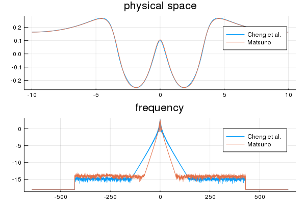

Two deep water problems
using DeepWaterModels
using FFTW
using PlotsPlot results function
function fig_problem!( p, problem::Problem )
s = 0
(hhat,uhat) = problem.data[end]
(hr,ur) = (real(ifft((problem.model.Gamma.^s).*hhat)),
real(ifft(uhat)))
plot!(p[1,1], problem.model.mesh.x, hr;
title="physical space",
label=problem.model.label)
plot!(p[2,1], fftshift(problem.model.mesh.k),
log10.(1e-18.+abs.(fftshift(hhat)));
title="frequency",
label=problem.model.label)
endfig_problem! (generic function with 1 method)param = Parameters( ϵ = 1/2,
N = 2^12,
L = 10,
T = 5,
dt = 0.001)
init = BellCurve(param)
solver = RK4(param)
cheng = CGBSW(param)
problem1 = Problem(cheng, init, param, solver)
matsuno = Matsuno(param)
problem2 = Problem(matsuno, init, param, solver);p = plot(layout=(2,1))
problems = [ problem1, problem2 ]
for problem in problems
solve!( problem )
fig_problem!( p, problem )
end
Progress: 0%| | ETA: 2:43:43[K
Progress: 13%|██████ | ETA: 0:00:21[K
Progress: 26%|███████████ | ETA: 0:00:12[K
Progress: 38%|████████████████ | ETA: 0:00:09[K
Progress: 50%|█████████████████████ | ETA: 0:00:06[K
Progress: 63%|██████████████████████████ | ETA: 0:00:04[K
Progress: 75%|███████████████████████████████ | ETA: 0:00:03[K
Progress: 87%|████████████████████████████████████ | ETA: 0:00:01[K
Progress: 100%|█████████████████████████████████████████| ETA: 0:00:00[K
Progress: 0%| | ETA: 1:36:31[K
Progress: 10%|████ | ETA: 0:00:19[K
Progress: 20%|████████ | ETA: 0:00:12[K
Progress: 31%|█████████████ | ETA: 0:00:09[K
Progress: 41%|█████████████████ | ETA: 0:00:07[K
Progress: 51%|█████████████████████ | ETA: 0:00:06[K
Progress: 61%|█████████████████████████ | ETA: 0:00:05[K
Progress: 72%|█████████████████████████████ | ETA: 0:00:03[K
Progress: 82%|█████████████████████████████████ | ETA: 0:00:02[K
Progress: 92%|██████████████████████████████████████ | ETA: 0:00:01[K
This page was generated using Literate.jl.